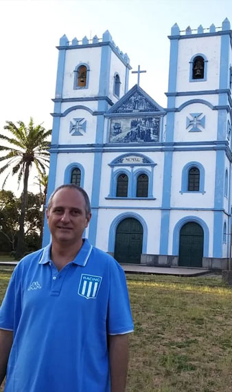
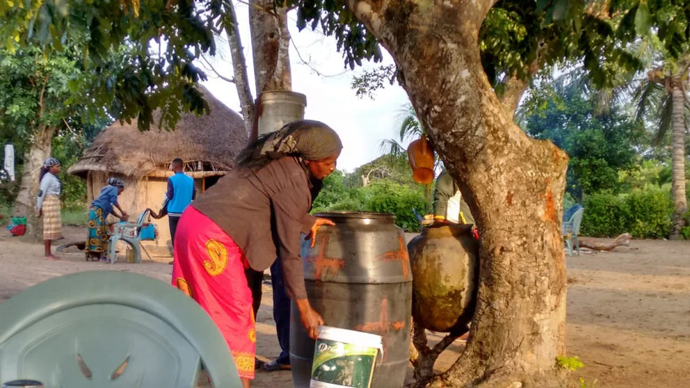
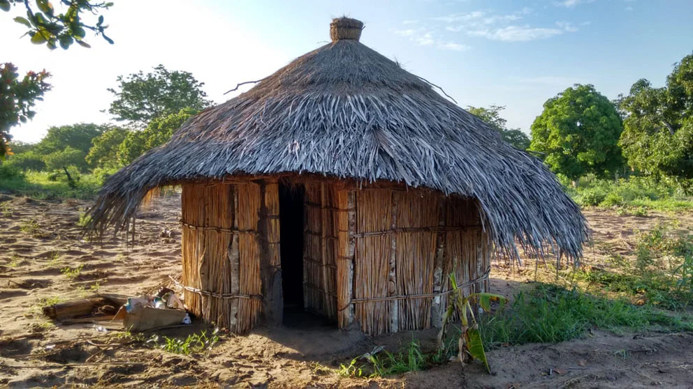

La angustia del cura argentino que misiona en Mozambique ante el primer caso de coronavirus: “Si la epidemia llega moriremos muchos”
Juan Gabriel Arias reside desde el 2000 en una provincia que apenas cuenta con 10 camas de terapia intensiva para un millón y medio de personas. “El sistema no está preparado: con los brotes de cólera, la gente terminaba siendo atendida en el piso del patio del hospital”, explica. La cuarentena en las chozas, la necesidad de buscar agua en una canilla y la ayuda de la Fundación Messi
Por Julián Zocchi
24 de Marzo de 2020

“Si el Coronavirus se extiende por Mozambique, esto va a ser una verdadera catástrofe”, se lamenta el padre Juan Gabriel Arias (51) de aquél lado de este mundo, más que nunca, un pañuelo. “La gente tiene miedo”, sigue. “Nos vamos a morir todos como perros”, escucha en cada rincón.
A esta hora empieza a caer el sol en Mozambique, el país africano que baña sus costas con el Océano Indico y mira de frente a Madagascar. El padre Juan Gabriel envía una foto con su iglesia de fondo, pero esta vez está vacía. Es que el domingo se conoció el primer caso de coronavirus en Mozambique (“un hombre de 75 años que llegó de Inglaterra”, informó el gobierno) y se encendieron todas las alarmas. Y el cura misionero que llegó a Mangundze en el año 2000, sabe que (de propagarse la epidemia) la situación puede tornarse insostenible.
“El gobierno decretó el cierre de las escuelas y las iglesias. El domingo hicimos la última misa antes de la cuarentena. Y hoy estuve en las escuelas para hablar con los chicos y transmitirle las medidas que tienen que tomar para cuidarse. Pero acá es más difícil que se queden en sus casas porque, de mínima, tienen que salir a buscar agua una vez al día. Y las fuentes son un gran foco de contagio: todos sacan agua de la misma bomba…”, le cuenta a Infobae el cura amigo personal del Papa Francisco.
Cuando pensamos la realidad de la cuarentena africana tenemos que sacarnos el chip de la Argentina donde, a través de una Cadena Nacional o de la información en redes sociales, las directivas del Gobierno llegan rápidamente: “Acá es distinto.
Lo positivo es que el presidente Nyussi (Filipe Jacinto) actuó rápido y decretó la cuarentena antes del primer caso. Pero creo que es insuficiente. Los referentes y dirigentes son los que comunican personalmente. Y hay que tener en cuenta que la mayor parte del país no tiene acceso a la electricidad y no tiene televisión. Muy pocos cuentan con radio. Y los que tienen teléfonos con redes sociales se comen todas las fake news. Eso los paraliza, por eso la situación es muy complicada”, grafica el cura que se hizo famoso por su fanatismo por Racing.

En medio de una comunicación latosa a través del WhatsApp, el padre que trabaja con la Fundación Messi pinta el cuadro de la salud mozambiqueña: “Hay mucho miedo porque el sistema de salud no está preparado para una pandemia como el coronavirus. Normalmente, cuando hay algún brote de cólera, los hospitales colapsan y la gente termina en el piso del patio del hospital: se cerca una zona con una cinta y se usa el piso. Porque no hay habitaciones, no hay oxígeno, no hay salas de terapia intensiva…”, explica Juan Gabriel que alguna vez hasta manejó una ambulancia para llegar al hospital y salvar una vida.
-¿Cuál fue la reacción de los mozambiqueños ante el coronavirus?
-La gente tiene mucho miedo: si en Italia, China, España y los Estados Unidos, que son los países más desarrollados en cuanto a salud, hubo miles de muertes… acá, que el sistema no existe, va a ser un desastre. La gente dice: “Vamos a morir como perros”. Tienen miedo de que sea como en los tiempos de guerra. Hay terror en la población.
-¿Pero se tomaron las medidas correspondientes?
-Se tomaron y, en esta consciencia vertical que hay en Mozambique, lo respetan. Lo poco que aprendió el pueblo lo lleva a cabo. Por ejemplo, ya nadie saluda dando la mano. El Gobierno tiene pocos medios, pero está muy preocupado con la prevención. En Xai Xai, repartieron baldes con una canillita y jabón en todos los negocios para que la gente se lave las manos al entrar y salir. Es inversión del Estado para que la gente no se contagie. Pero la sociedad y el Gobierno están con miedo.
-¿El miedo es porque las medidas no alcanzan?
-El terror es porque hay mucha gente de Mozambique en Sudáfrica, un país vecino que tiene coronavirus. Mucha gente que trabaja allá se vino a pasar la cuarentena para este lado y no cumple con las medidas. Cruzan la frontera con poco control, van a todas las zonas rurales y el contagio va a ser terrible.
RECUERDOS DE LA GUERRA
El padre Juan Gabriel Arias llegó a Mozambique en el año 2000 como parte de una misión católica y no se pudo ir más. “Encontré mi lugar en el mundo”. Un pueblo sufrido pero que lo abrazó desde el principio. A simple vista, el mayor flagelo es la desnutrición, pero los mozambiqueños llevan en su memoria los recuerdos de la guerra: “Eso los persigue. Y ahora sienten que pueden volver a perder familiares, como en los conflictos armados”, explica Juan Gabriel.

Mozambique se liberó de Portugal en 1975. Y, después de toda ese sufrir, vino otro río de sangre con una guerra civil que duró 16 años. Durante décadas, lo único que tuvo el país fue retraso. Ni siguiera turismo, a pesar de sus costas hermosas. Hambre y una expectativa de vida, bajísima: “La mayoría de los chicos comen una vez por día. Y la mitad del país tiene menos de 18 años”, cuenta el padre Juan Gabriel.
Ahora, cuando el coronavirus empieza a asomar, las posibilidades de Mangundze, donde viven quizás diez mil personas (el último censo data de muy lejos), son más que desalentadoras. El dato clave: existe una sola terapia intensiva, en Xai Xai, con diez camas para una población de un millón y medio de personas a la redonda. Es por eso que el cura habla con una preocupación extrema: “Si esto se propaga, vamos a morir muchos”.
-¿Qué imagina que puede pasar cuando arranque la demanda de atención en el hospital de Xai Xai?
-Un caos total. En la terapia intensiva (entre comillas) hay muy pocas camas y van a ser reservadas a los pudientes. Otro problema es que hay pocos tubos de oxígeno, que es lo primero que hay que darle a un paciente con esta patología. Acá prácticamente no hay atención, van a combatir el Coronavirus con Paracetamol y los van a mandar a la casa.
-Para entender cómo se vive una cuarentena en Mozambique, ¿cómo son las viviendas de las familias?
-En Mangundze, el concepto de casa es el terreno. Tenés diferentes chozas que se reparten en un lote: puede ser una para el matrimonio, otra para el hijo mayor, otra para el resto de los hijos. Y entre todas esas chozas, que pueden ser de paja y barro, forman la casa. Pero la vida transcurre afuera, en ese terreno. No lo pienses entre cuatro paredes.
-¿Y el agua es un doble problema?
-Sí, porque las casas no tienen pozos. Es tarea de las madres y los hijos conseguirla y hay una sola bomba en toda la aldea. Entonces, es imposible no salir de la casa. Se concentran todos alrededor de esa fuente, lo que la convierte en un foco de contagio. No sólo porque todos tocan la barra de la bomba, sino porque se junta mucha gente.
-Uno de los pocos puntos de contacto entre Mozambique y la Argentina es que muchos chicos necesitan ir a la escuela por el plato de comida…
-Cuando fuimos a las escuelas, les avisamos a los chicos que seguimos con los desayunos. Gracias a la Fundación Messi les damos desayuno a quince mil chicos. Y la situación se hace más grave porque los chicos están mal alimentados. Tienen las defensas bajas. Y si les agarra la fiebre, les agarra más fuerte. Para muchos de ellos el desayuno que les damos es la comida más fuerte y nutritiva del día. Y para la gente del interior, del Mato, es la única comida en muchos casos. Por eso, vamos a continuar con el desayuno, siguiendo las normativas que dio el presidente de Mozambique.
-Conociendo esta situación, imagino mucha gente desde la Argentina pidiéndole que vuelva a resguardarse.
-Sí, pero yo no soy un mártir ni un héroe. Mi lugar es acá, la paso bien, me gusta. Es cierto que si enfermo voy a tener más medios para curarme en la Argentina, pero voy a estar muy mal espiritualmente. Si llega la epidemia, tengo que estar para dar la extremaunción o despedir a los muertos en los funerales. Y si se me va la vida en eso, que así sea. Qué mejor que dar la vida haciendo el trabajo sacerdotal. No me perdonaría nunca abandonarlos en este momento.